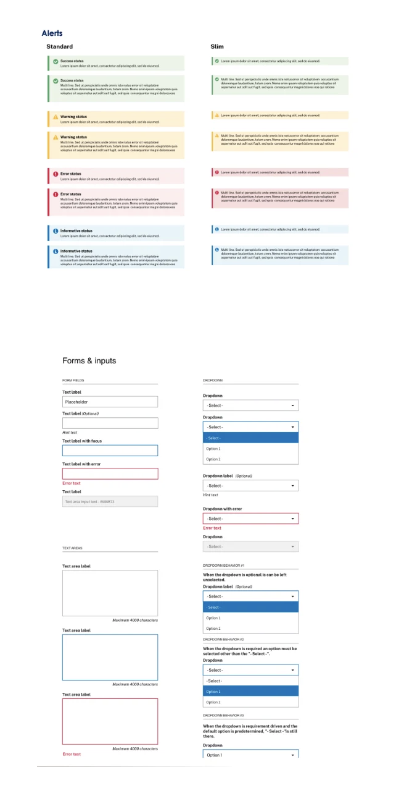
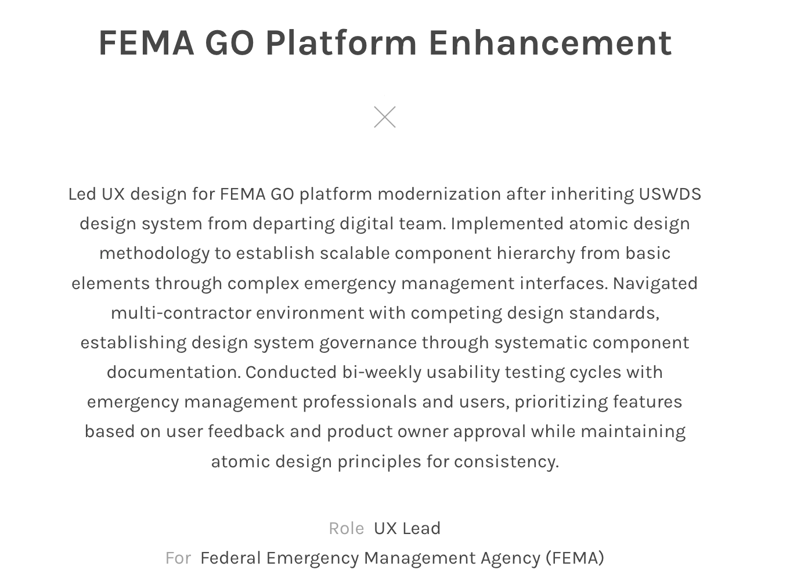
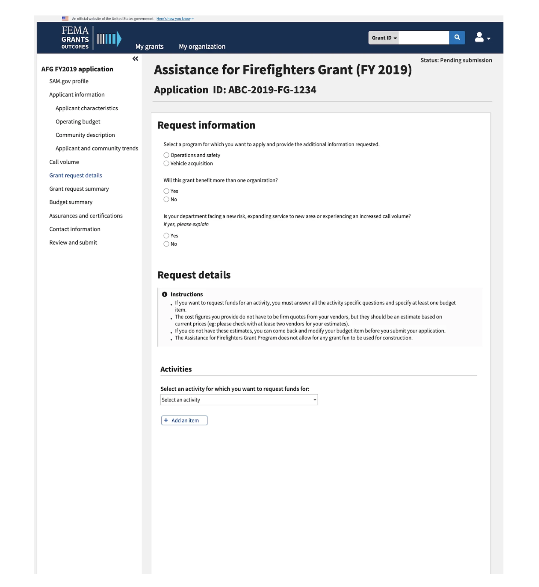
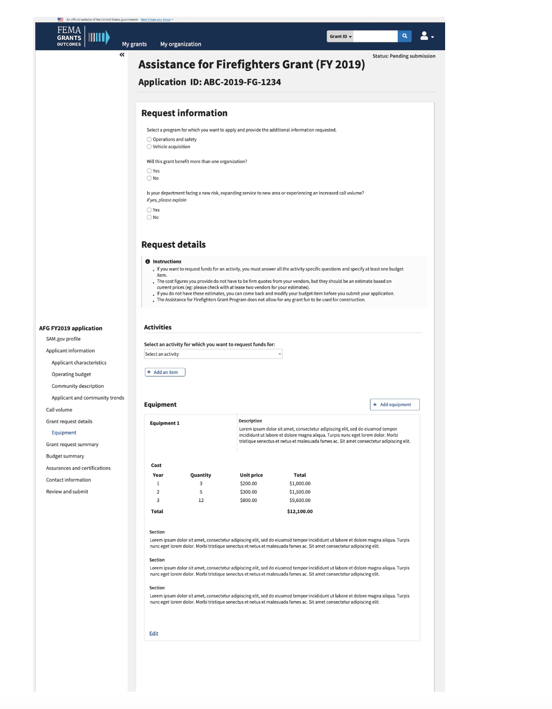
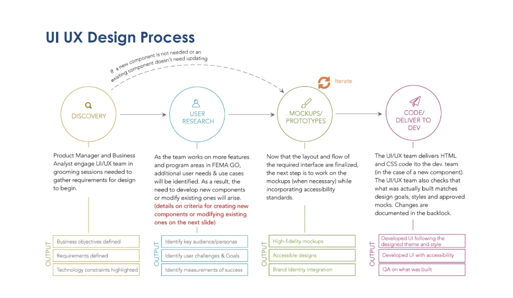
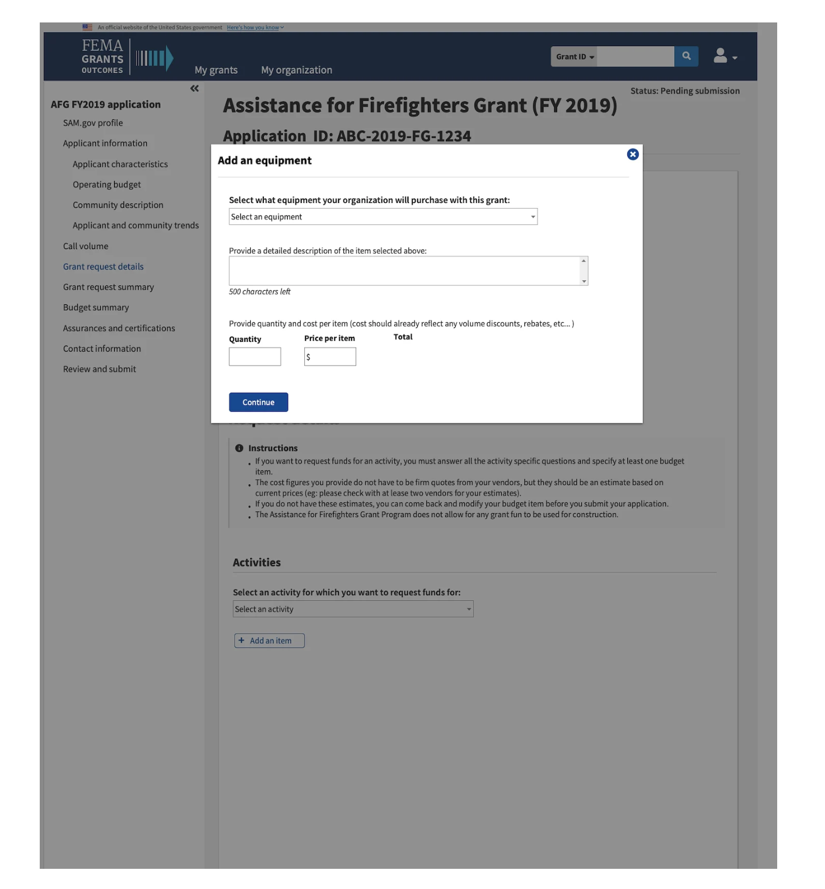
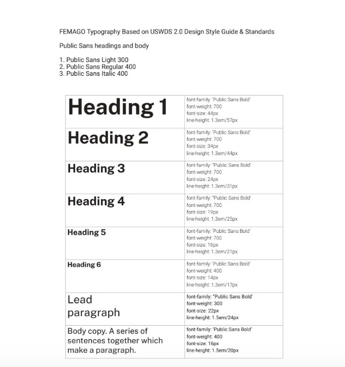
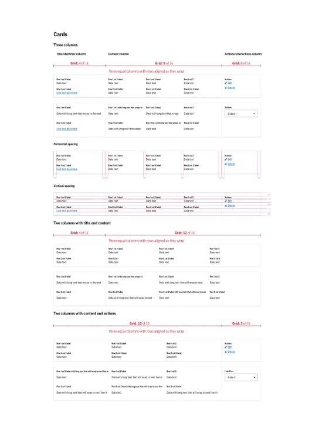
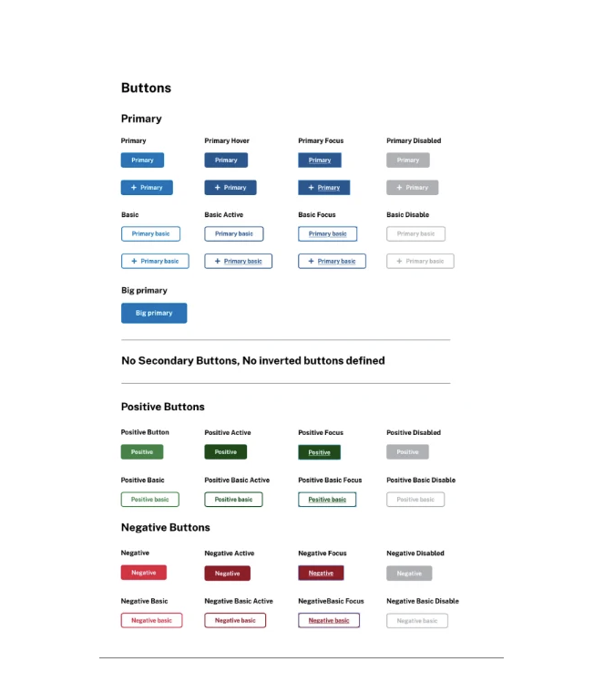
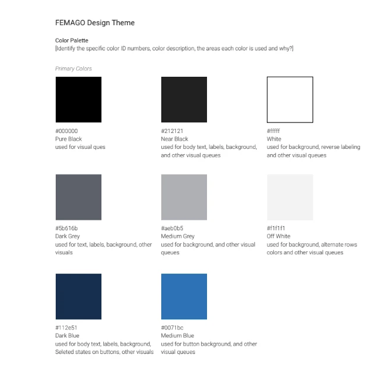

FEMA GO Platform Enhancement
UX Lead | Federal Emergency Management Agency (FEMA)

Led UX design for FEMA GO platform modernization, evolving an inherited USWDS-based design system into a scalable, governed system supporting complex grant workflows.
Problem
- Inconsistent UI and component usage across workflows
- Fragmented form patterns and validation behaviors
- High cognitive load in multi-step grant applications
- Accessibility gaps across interaction states
Approach
- Implemented atomic design methodology
- Standardized reusable components and patterns
- Established consistent validation and feedback states
- Introduced design system governance
Design System
Alerts and Status Patterns

Typography Scale

Buttons and Interaction States

Color Theme

Card Layouts and Grid Structure

Application UI
Grant Request Details

Modal Interaction (Add Equipment)

Grant Workflow

Design Process

Impact
- Improved consistency across platform interfaces
- Reduced variation in form behavior and validation
- Increased accessibility compliance
- Enabled faster development through reusable components